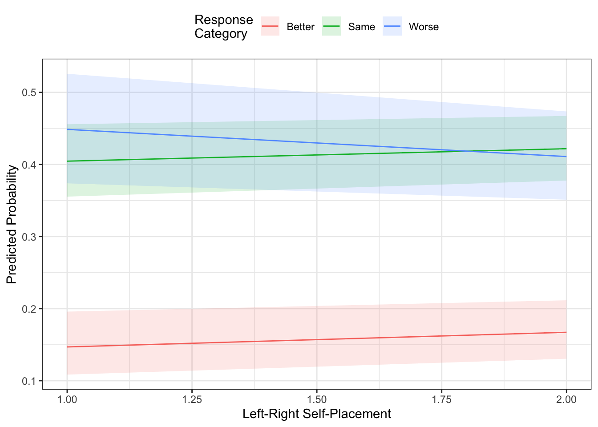
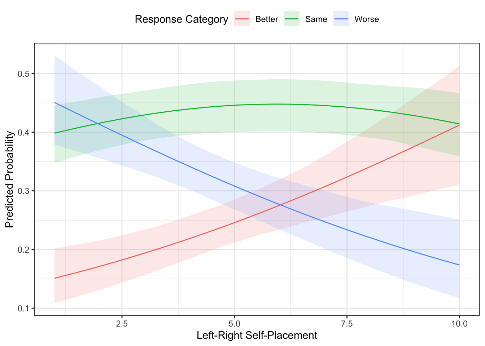
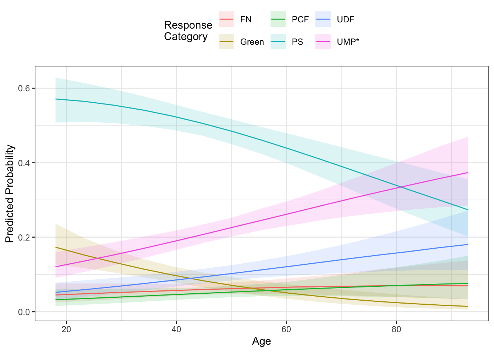
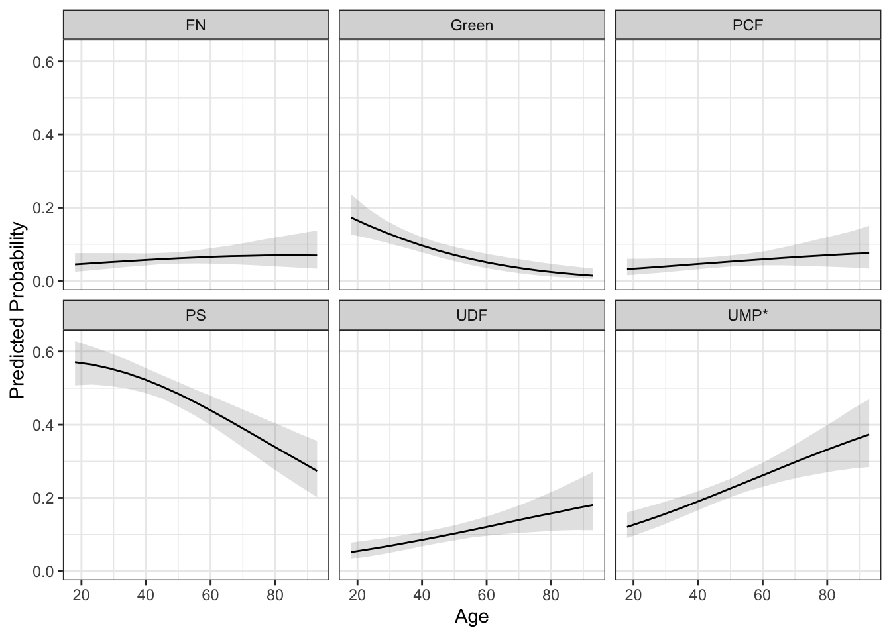
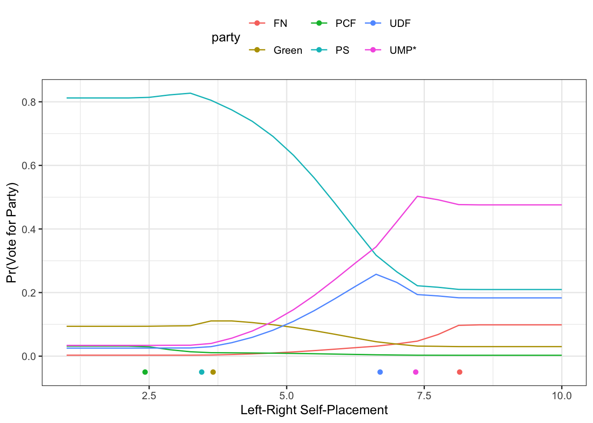
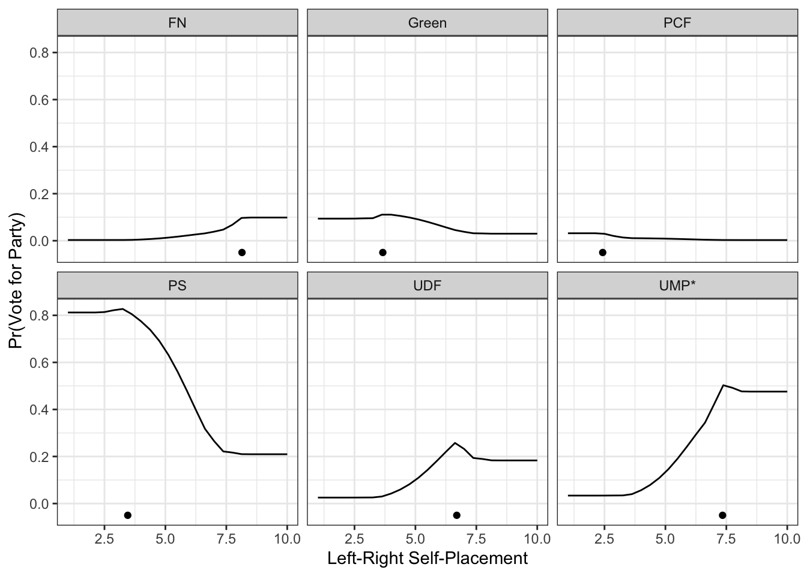
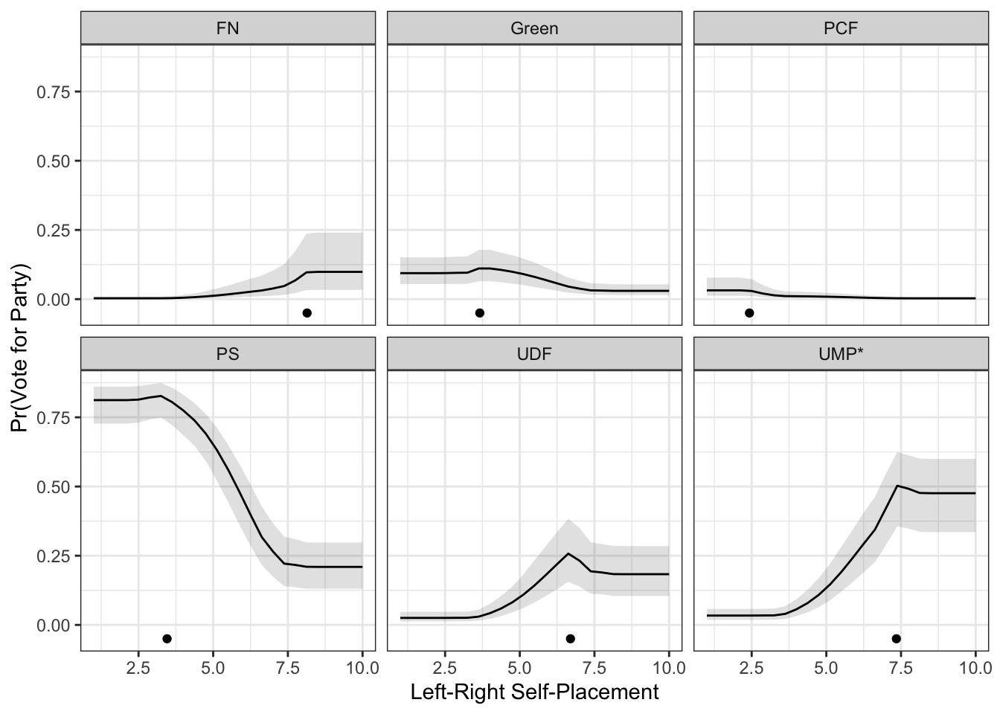

Chapter 5 Ordered and Multinomial Logit
There are lots of situations where we have a categorical dependent variable with more than two categories. In this case, either ordered logit (if the categories are inherently ordered) or multinomial logit (if they are un-ordered) is often a suitable choice. These models predict the probability that an observation is in each of the categories.
5.1 Ordinal DV Models
In the ordered logit (or probit) model, the idea is that there is a latent continuous variable about which we only observe a discrete realization. That is, we don’t know the observation’s exact value on the underlying latent variable; instead, we know whether it falls between two different threshold parameters. That is, we know whether it falls into the same category with a bunch of other unknown values. The goal of the model is to estimate the regression parameters along with these threshold parameters.
These are often called cumulative probability models because the model is estimating the following:
\[Pr(y <= m) = F(\tau_m - Xb)\]
Which leads to:
\[ Pr(y=m) = F(\tau_{m} - Xb) - F(\tau_{m-1} - Xb)\]
where, as above, \(F()\) is the CDF of a probability distribution - the logistic for logit or normal for probit.
There are a couple of different ways to fit these models. The polr() function in the MASS package is one way. This method will probably respond to post-estimation functions better because it has been around for longer. There is also a package called ordinal that has functions for fitting different kinds of ordered DV models. We will spend a bit more time talking about this package because it has implications for chapters later on in the book. Just know, that if you run into a situation where output from the clm() function doesn’t respond well to a post-estimation technique that you might try the polr() function from MASS.
library(ordinal)
library(DAMisc)
data(france)
ologit.mod <- clm(retnat ~ lrself + male + age, data=france)
summary(ologit.mod)## formula: retnat ~ lrself + male + age
## data: france
##
## link threshold nobs logLik AIC niter max.grad cond.H
## logit flexible 542 -566.76 1143.53 5(0) 5.98e-14 5.7e+04
##
## Coefficients:
## Estimate Std. Error z value Pr(>|z|)
## lrself -0.154106 0.037345 -4.127 3.68e-05 ***
## male -0.342544 0.162003 -2.114 0.0345 *
## age 0.010258 0.004911 2.089 0.0367 *
## ---
## Signif. codes: 0 '***' 0.001 '**' 0.01 '*' 0.05 '.' 0.1 ' ' 1
##
## Threshold coefficients:
## Estimate Std. Error z value
## Better|Same -1.6237 0.2951 -5.503
## Same|Worse 0.3419 0.2857 1.197The summary function for the clm object is a bit better because it returns \(p\)-values, whereas the summary for the polr object does not. Once we’ve estimated the model, just like above we can see how the model fits. The ordfit() function in the DAMisc package will work on both polr and clm objects. The various peseudo-\(R^{2}\) measures are defined as they were in the binary model.
## Estimate
## Count R2 0.465
## Count R2 (Adj) 0.049
## ML R2 0.045
## McFadden R2 0.021
## McFadden R2 (Adj) 0.013
## McKelvey & Zavoina R2 0.049We could also look at the PRE just as we did with the binary model.
## mod1: retnat ~ lrself + male + age
## mod2: retnat ~ 1
##
## Analytical Results
## PMC = 0.437
## PCP = 0.465
## PRE = 0.049
## ePMC = 0.353
## ePCP = 0.367
## ePRE = 0.021
##
## Simulated Results
## median lower upper
## PRE 0.033 -0.003 0.062
## ePRE 0.021 0.004 0.036We see not an excellent fit here - we improve ever so slightly on the null model, though that’s a pretty low bar.
You Try It!
Using the GSS 2016 data, estimate and summarise an ordered logit model of sparts on college_ed (which we created in the previous chapter), aid_scale, sex and age.
We can use the ggeffects package to plot the fitted values.
library(ggeffects)
library(ggplot2)
g <- ggpredict(ologit.mod, terms="lrself") %>%
mutate(response.level = factor(response.level,
labels=levels(france$retnat)))
ggplot(g, aes(x=x, y=predicted, colour=response.level)) +
geom_ribbon(aes(ymin=conf.low,
ymax=conf.high,
fill=response.level),
alpha=.15,
col="transparent") +
geom_line() +
theme_bw() +
theme(legend.position="top") +
labs(x="Left-Right Self-Placement",
y = "Predicted Probability",
colour = "Response\nCategory",
fill = "Response\nCategory") In the figure above, the prediction we would get is from the line that has the highest probability. In this case, you see that it’s mostly “Same”, except for when left-right self-placement is at its most left-leaning (i.e., lowest) values - in which case the prediction would be for “Worse”. The “Better” and “Worse” lines basically trade off moving across the left-right spectrum.
You Try It!
Using the model you estimated above, plot the effect of aid_scale for the three different college_ed groups.
The clm function also does the generalized ordered logit model wherein some of the coefficients are allowed to change across response categories. This is essentially a ordinal-multinomial model hybrid.
## formula: retnat ~ male + age
## nominal: ~lrself
## data: france
##
## link threshold nobs logLik AIC niter max.grad cond.H
## logit flexible 542 -566.20 1144.40 5(0) 3.15e-13 5.8e+04
##
## Coefficients:
## Estimate Std. Error z value Pr(>|z|)
## male -0.345173 0.162037 -2.130 0.0332 *
## age 0.010367 0.004912 2.111 0.0348 *
## ---
## Signif. codes: 0 '***' 0.001 '**' 0.01 '*' 0.05 '.' 0.1 ' ' 1
##
## Threshold coefficients:
## Estimate Std. Error z value
## Better|Same.(Intercept) -1.78421 0.33463 -5.332
## Same|Worse.(Intercept) 0.44284 0.30183 1.467
## Better|Same.lrself 0.18569 0.04792 3.875
## Same|Worse.lrself 0.13092 0.04290 3.052It is simple to do a test between the of the generalization:
## Likelihood ratio tests of cumulative link models:
##
## formula: nominal: link: threshold:
## ologit.mod retnat ~ lrself + male + age ~1 logit flexible
## gologit.mod retnat ~ male + age ~lrself logit flexible
##
## no.par AIC logLik LR.stat df Pr(>Chisq)
## ologit.mod 5 1143.5 -566.76
## gologit.mod 6 1144.4 -566.20 1.1232 1 0.2892The plot above uses the MER approach, if you wanted the AME approach, you could use ordAveEffPlot() from the DAMisc package. Just like aveEffPlot(), you can have the function return the data to plot with returnMprob=TRUE and plot=FALSE.
oap <- ordAveEffPlot(ologit.mod, "lrself",
data=france, plot=FALSE,
returnMprob=TRUE)
ggplot(oap$data, aes(x=s, y=mean, colour=y)) +
geom_ribbon(aes(ymin=lower,
ymax=upper,
fill=y),
alpha=.15,
col="transparent") +
geom_line() +
theme_bw() +
theme(legend.position="top") +
labs(x="Left-Right Self-Placement",
y="Predicted Probability",
colour = "Response Category",
fill = "Response Category")
Note that this looks really similar to the plot we made above.
You Try It!
Using the ordAveEffPlot() function, replicate the same graph you made in the previous exercise.
- How do the two compare to each other?
One last thing we could do here is to test one of the important assumptions in this model - the Parallel Regressions Assumption. This assumption states that the effect on the cumulative probabilities is the same for all levels of the dependent variable. If this assumption doesn’t hold, then ordered logit or probit is not the best model. The Brant test is a test of this assumption. There is a package called brant that has this test in it. To use the brant pacakge, you’ll need to re-estimate the model using polr() from the MASS package.
ologit.mod2 <- MASS::polr(retnat ~ lrself + male + age, data=france)
library(brant)
brant(ologit.mod2)## --------------------------------------------
## Test for X2 df probability
## --------------------------------------------
## Omnibus 1.19 3 0.76
## lrself 0.7 1 0.4
## male 0.24 1 0.62
## age 0.16 1 0.69
## --------------------------------------------
##
## H0: Parallel Regression Assumption holdsYou could also do a test much like this with the clm() function. The test below is similar in spirit to the “Omnibus” test above. To my mind, you should only really pay attention to the omnibus test and if it fails, switch to multinomial logit.
null.mod <- clm(retnat ~ lrself + male + age, data=france)
alt.mod <- clm(retnat ~ 1, nominal = ~ lrself + male + age, data=france)You Try It!
Does the parallel regressions assumption hold in your model?
5.2 Multinomial Logit
The multinomial logit model allows us to model un-ordered choices or choices that appear ordered by where the parallel regressions assumption doesn’t hold. In the simplest version of the model that we’ll talk about first, we’re modeling: \[Pr(y=m) = \frac{e^{XB_j}}{\sum_{k=1}^{M}e^{XB_k}}\]
where in R, the default is to set \(B_1 = \mathbf{0}\) for identification purposes. That is, the reference category is the first category in the factor. In R, the first category is always the reference level of a factor. It can be changed by rearranging the levels so a different one is the first one.
Here, we’re going to use another dataset from France. In this case, we’ll be modeling vote as a function of some demographic covariates and left-right placement variables. First we’ll read in the data and make a factor variable out of vote by using the factorize() function.
library(rio)
france2 <- import("data/France_2004.dta")
france2 <- france2 %>%
mutate(vote_fac = factorize(vote),
demsat = droplevels(factorize(demsat)),
eusup = factor(eusup, levels=c(-1,0,1),
labels=c("No", "Neutral", "Yes")),
retnat = droplevels(factorize(retnat)),
urban = droplevels(factorize(urban)),
soclass = droplevels(factorize(soclass)))Just as with the ordered logit, there are two prominent ways of estimating the multinomial logit model. The first is with the multinom() function in the nnet package. This model only allows individual-specific information - it doesn’t do the conditional logit specification that includes choice-specific information. The mlogit() function in the mlogit package does also estimate the conditional logit specification along with the more traditional multinomial logit model and others.
library(nnet)
mod1 <- multinom(vote_fac ~ age + retnat + demsat +
eusup + union + soclass + urban,
data=france2, trace=FALSE)The summary function for multinom objects is not that helpful because it gives a matrix of coefficients and separately a matrix of standard errors. The mnlSig() function in the DAMisc package helps by printing the matrix of coefficients with significance flags.
## PS Green UDF UMP* FN
## (Intercept) 3.055* 0.980 -0.025 2.608 -11.154*
## age -0.021* -0.046* 0.009 0.009 -0.005
## retnatsame -1.020 -1.278 -2.126 -1.905 -1.129
## retnatworse -1.053 -1.732 -2.592* -2.950* -1.569
## demsatassez satisfait 0.359 1.502 -0.136 -0.369 12.661*
## demsatpeu satisfait 0.720 2.013 0.223 -0.227 13.690*
## demsatpas satisfait du tout 0.213 2.293* -0.878 -1.259 13.627*
## eusupNeutral 0.409 0.603 1.345 -0.207 -0.133
## eusupYes 1.452* 2.494* 2.258* 0.780 -0.367
## union -1.538* -1.371* -1.988* -2.026* -2.228*
## soclassclasse moyenne inférieure 1.312* 1.515* 2.188* 1.983* 0.848
## soclassclasse moyenne 1.115* 0.974* 2.227* 2.293* 0.836
## soclassclasse moyenne supérieure 2.062 2.515* 3.416* 3.199* 0.421
## soclassclasse favorisée 14.800* 15.354* 16.493* 16.669* 15.305*
## urbandans une ville petite ou moyenne -0.331 -0.553 -0.447 -0.528 0.055
## urbandans une grande ville -0.319 -1.417* -0.464 -0.409 -0.101We could also do this with the mlogit() function, but first we have to turn the data into a format amenable for the function with mlogit.data().
library(mlogit)
mldat <- mlogit.data(france2, shape="wide", choice="vote_fac")
mlmod <- mlogit(vote_fac ~ 1 | age + retnat + demsat +
eusup + union + soclass + urban,
data=mldat)You Try It!
Estimate the same model as above, but as a multinomial logit model instead. Summarise the model and consider the differences.
Note that we will focus on this format later on, but for now, we’ll use the multinom() function because it plays better with the post-estimation tools we want to use. If we wanted to generate scalar measures of fit for the mode, we could use the mnlfit() function from the DAMisc package.
## $result
## Estimate p-value
## Fagerland, Hosmer and Bonfi 39.58523646 0.4887696
## Count R2 0.56634304 NA
## Count R2 (Adj) 0.12418301 NA
## ML R2 0.33441756 NA
## McFadden R2 0.14452618 NA
## McFadden R2 (Adj) 0.07865403 NA
## Cragg-Uhler(Nagelkerke) R2 0.35568788 NA
##
## attr(,"class")
## [1] "mnlfit"We could also calculate the proportional reduction in error:
## mod1: vote_fac ~ age + retnat + demsat + eusup + union + soclass + urban
## mod2: vote_fac ~ 1
##
## Analytical Results
## PMC = 0.505
## PCP = 0.566
## PRE = 0.124
## ePMC = 0.322
## ePCP = 0.394
## ePRE = 0.105
##
## Simulated Results
## median lower upper
## PRE 0.094 0.063 0.120
## ePRE 0.093 0.067 0.119The effects plot look a lot like those for the ordered logit model. The ggpredict() function will generate predictions, but it doesn’t generate standard errors or confidence bounds. Instead, we could use the mnlAveEffPlot() function from the DAMisc package if we wanted a plot with confidence intervals.
You Try It!
How does your multinomial logit model fit?
mne <- mnlAveEffPlot(mod1, "age", france2, nvals = 15, plot=FALSE)
ggplot(mne, aes(x=s, y=mean, colour=y)) +
geom_ribbon(aes(ymin=lower,
ymax=upper,
fill=y),
alpha=.15,
col="transparent") +
geom_line() +
theme_bw() +
theme(legend.position="top") +
labs(x="Age",
y = "Predicted Probability",
colour = "Response\nCategory",
fill = "Response\nCategory")
If the superposition of the lines makes it too difficult to see, you could use faceting.
ggplot(mne, aes(x=s, y=mean)) +
geom_ribbon(aes(ymin=lower,
ymax=upper),
alpha=.15,
col="transparent") +
geom_line() +
theme_bw() +
theme(legend.position="top") +
labs(x="Age",
y = "Predicted Probability") +
facet_wrap(~y)
You Try It!
Plot the effect of aid_scale for men and women.
There is another version of the MNL model, called the conditional logit model, where you can include both individual-specific information (like we’ve already done), but you can also include choice-specific information. This modifies the model that we discussed above in the following way:
\[\begin{aligned} \eta_{j} &= XBj + z_jd\\ Pr(Y=m) &= \frac{e^{\eta_j}}{\sum_{k=1}^{M}e^\eta_{k}} \end{aligned}\]
Here \(B_{j}\) are the coefficients for each response category that apply to the individual-specific information and \(d\) is a single coefficient that applies to the choice-varying information. We’ll use this model to add in information about the individual’s ideological distance to each party. This would help us evaluate models of spatial voting (i.e., that people vote for parties that are ideologically closer to them). This is going to require us to do some modification to the data.
First, we need to re-organize the lrX variables where X refers to a party number. These variables measure idiosyncratic (i.e., person-specific) placements of the parties on the ideological spectrum. We need to change those into lr_X where X will now represent the same party abbreviations as the vote variable.
france2w <- france2 %>%
rename("lr_PCF" = "lr10",
"lr_PS" = "lr20",
"lr_Green" = "lr50",
"lr_UDF" = "lr70",
"lr_UMP*" = "lr73",
"lr_FN" = "lr80")
mldat2 <- mlogit.data(france2w, choice="vote_fac", varying = grep("lr\\_", names(france2w)), sep="_") The mlogit.data() function does all of the necessary reshaping. Now, we need to calculate the distance from each individual to each party.
Now, we could add that into the model.
mlmod2 <- mlogit(vote_fac ~ dist | age + retnat + demsat +
eusup + union + soclass + urban,
data=mldat2)Now, we come to what is probably the hardest task so far. That is - making an effect plot for distance. This is hard because we can’t just change the values of distance because it’s really a function of lots of variables. As we get farther from some parties, we get closer to others in systematic (deterministic) ways. We have to make sure we represent those appropriately. Let’s first think about using the MER approach. First, we would probably need to find the average of the party placements and the average or mode of the other variables. To do this, we’ll take the first observation’s values. Then, we’ll find the appropriate central values to use instead.
tmp <- mldat2[1:6, ]
## numeric variables
tmp$age <- median(france2$age)
tmp$hhincome <- median(france2$hhincome)
tmp$male <- median(france2$male)
tmp$union <- median(france2$union)
## factor variables
tmp$demsat <- central(france2$demsat)
tmp$eusup <- central(france2$eusup)
tmp$retnat <- central(france2$retnat)
tmp$soclass <- central(france2$soclass)
tmp$urban <- central(france2$urban)Next, let’s find the mean of the party placements and replace those in tmp.
pty <- mldat2 %>%
as.data.frame %>%
group_by(alt) %>%
summarise(lr = mean(lr)) %>%
rename("party" = "alt")
tmp$lr <- pty$lrNext we need to change the lrself variable, recalculate distance and then calculated predicted probabilities.
## FN Green PCF PS UDF UMP*
## 0.003081705 0.093902365 0.031763672 0.812112143 0.025329307 0.033810808We could then do this for lots of different values of lrself and the combine the results.
lrs <- seq(1,10, length=25)
preds <- NULL
for(i in 1:length(lrs)){
tmp$lrself <- lrs[i]
tmp$dist <- abs(tmp$lr - tmp$lrself)
preds <- rbind(preds, predict(mlmod2, newdata=tmp))
}Now, we can put those predictions into a format that’s amenable to plotting:
library(tidyr)
preds <- as.data.frame(preds)
preds$lrself <- lrs
preds <- preds %>% pivot_longer(cols=-lrself, names_to="party", values_to="prob")Next, we can make a plot:
ggplot(preds, aes(colour=party)) +
geom_line(aes(x=lrself, y=prob)) +
geom_point(data=pty, aes(x=lr, y=-.05)) +
theme_bw() +
theme(legend.position="top") +
labs(x="Left-Right Self-Placement",
y="Pr(Vote for Party)")
Or, with faceting:
ggplot(preds) +
geom_line(aes(x=lrself, y=prob)) +
geom_point(data=pty, aes(x=lr, y=-.05)) +
theme_bw() +
facet_wrap(~party) +
theme(legend.position="top") +
labs(x="Left-Right Self-Placement",
y="Pr(Vote for Party)")
Now, what we haven’t done is to find the uncertainty around the predictions. This is where things get more challenging. Because the predict function doesn’t return standard errors, we would need to calculate them in a different way if we wanted them. One way to do this would be with a parametric bootstrap. I’ve alluded to this a couple of times, but we’ll put a finer point on it here.
5.2.1 Parametric Bootstrap for Confidence Intervals.
Bootstrapping is a resampling technique that is used to generate uncertainty estimates for parameters. There are two main types:
- Non-parametric bootstrap - resample the original data with replacement and re-estimate the model \(R\) times, each time saving the parameter(s) of interest. Then, the distribution of the parameter across the bootstrap samples is an estimate of the sampling distribution.
- Parametric bootstrap - resampling from a known distribution to induce uncertainty in some quantity of interest.
So, the first thing we have to do is draw a bunch of samples from the distribution of the coefficients.
Now, let’s think about how we would generate a prediction for a single draw (i.e., row) of \(B\). If we looked into what the mlogit.predict() function looks like, that might give us some sense of what to do.
5.2.1.1 Brief Aside - Generic Methods
In R, you will have noticed by now that we can use the predict() function on lots of different objects. You might wonder, how does R know what to do with each differnet kind of object. It knows because objects have different predict methods. For example, the people who wrote the mlogit() function also wrote a function called predict.mlogit() which tells R what to do when the predict() function is called on an object of class mlogit.
If you want to see what that looks like, you can do the following:
Note that the use of the three colons (:::) which allow you to see a function not exported from the namespace. The main part of the function that will help us is the following.
newobject <- update(object, start = coef(object, fixed = TRUE),
data = newdata, iterlim = 0, print.level = 0)What happens here is that the update() function re-estimates the model. The start argument starts the model at the coefficient values for the original model. The data argument provides the new data to the model. Importantly, iterlim = 0 tells the update() function to do zero iterations (that is, not not update beyond the starting values). This then generates a vector of probabilities. We can use this by replacing the argument to start with the draw from the coefficients.
pred.dist <- NULL
for(i in 1:nrow(B)){
p <- update(mlmod2, start = B[i,],
data = tmp, iterlim = 0, print.level = 0)
pred.dist <- rbind(pred.dist, p)
}This is how it would work for a single value of lrself. To do it for all of the values of lrself we chose above, we would have to put the loop above in another loop.
pred.dist <- vector(mode="list", length=length(lrs))
for(j in 1:length(lrs)){
for(i in 1:nrow(B)){
tmp$lrself <- lrs[j]
tmp$dist <- abs(tmp$lr - tmp$lrself)
p <- update(mlmod2, start = B[i,],
data = tmp, iterlim = 0, print.level = 0)
pred.dist[[j]] <- rbind(pred.dist[[j]], p$probabilities)
}
}Next, we could calculate the confidence intervals for the predicted probabilities and then reshape for plotting:
lower <- t(sapply(pred.dist, function(x)apply(x, 2, quantile, .025)))
upper <- t(sapply(pred.dist, function(x)apply(x, 2, quantile, .975)))
lower <- lower %>%
as.data.frame %>%
mutate(lrself = lrs) %>%
pivot_longer(cols=-lrself, names_to="party", values_to="lower")
upper <- upper %>%
as.data.frame %>%
pivot_longer(cols=everything(), names_to="party", values_to="upper")
pred.cis <- lower %>%
mutate(upper = upper$upper,
prob = preds$prob)To make the plot, we should probably use facets to make it readable.
ggplot(pred.cis) +
geom_ribbon(aes(x=lrself, ymin=lower, ymax=upper),
alpha=.15,
col="transparent") +
geom_line(aes(x=lrself, y=prob)) +
geom_point(data=pty, aes(x=lr, y=-.05)) +
theme_bw() +
facet_wrap(~party) +
theme(legend.position="top") +
labs(x="Left-Right Self-Placement",
y="Pr(Vote for Party)")
We could follow this same framework for making any effect plot with confidence bounds from an mlogit object.